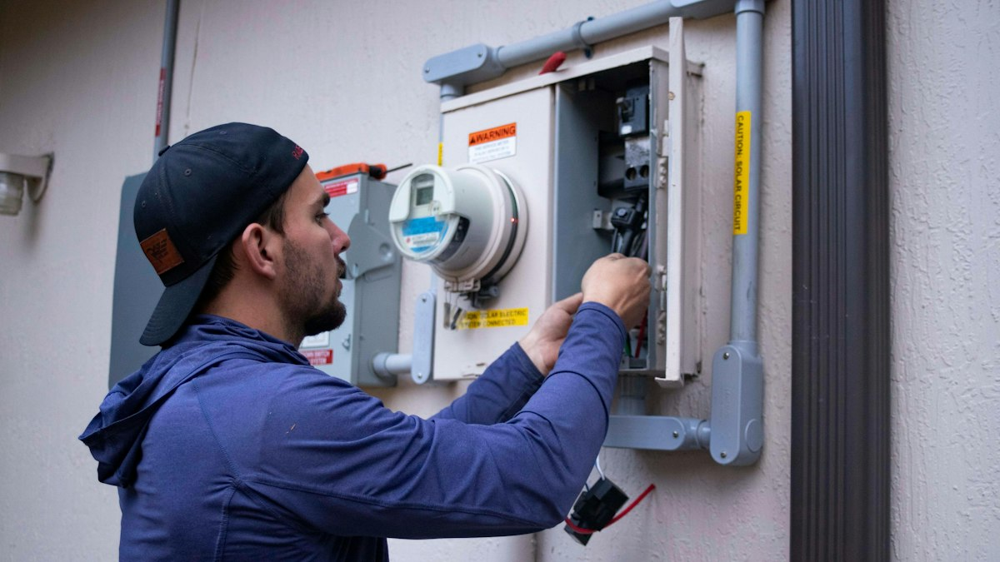

Smart city noise monitoring
Find the spots where complaints keep coming back.
- Mounts on existing CCTV and vehicle-detection poles
- Records the sound type, level, and timing
- Logs each event as evidence for complaint handling and policy
Noise complaints keep coming back, but most monitoring is still done by hand.
About60%
Fewer noise complaints
Installed area only, Siheung City, Dec 2025 to Jun 2026. Observation and guidance only, no enforcement.
95%+
Sound classification accuracy
Siheung pilot target met, per our 2025 final company report.
30%
Fewer monitoring blind spots
KEPCO Taean thermal power plant proof of concept.
Each sensor analyzes sound on the device. Only the information you need goes to the server.
Find the spots where complaints keep coming back.
Hear the sounds that cameras miss.

Pinpoint a fault on site after a sensor flags it.

Screen shows sample data.

About60%
Motorcycle noise kept coming back on Baegot Haesong Sipli-ro. We installed four units at four sites and recorded what caused each noise, and when.
Installed area only, Dec 2025 to Jun 2026. Observation and guidance only, no enforcement. Figure as verbally confirmed by Siheung City, Sep 2026.
Read the full case